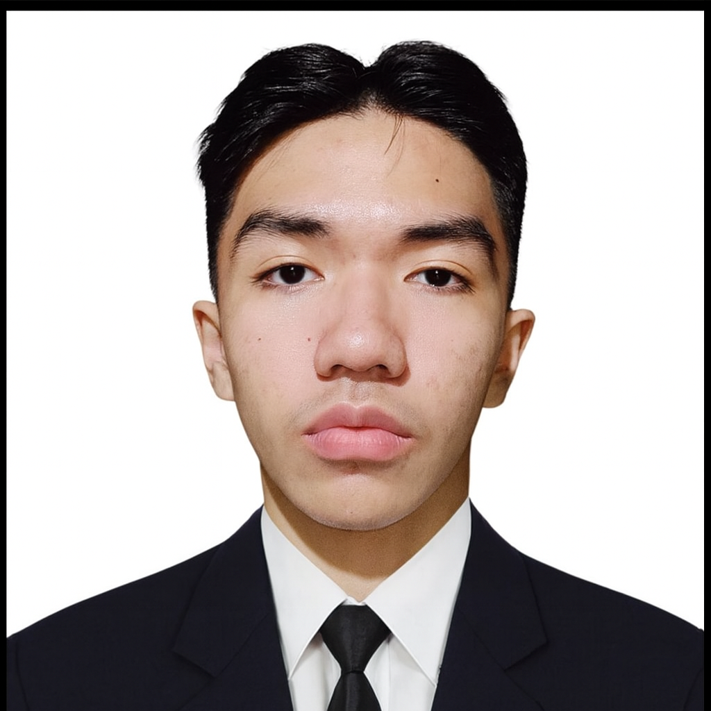

Elijah Neil S. Gallardo
Operating at the intersection of design and technology, I specialize in crafting digital experiences that exist on the edge of the known web. My mission is to bridge the gap between complex functionality and cinematic aesthetics.
In the pipeline of Ibispaint production, rotoscoping is the frame-by-frame discipline of isolating motion from live-action footage to build clean masks and motion references. It is used to extract characters and objects with precision, creating accurate mattes that can be integrated into simulations.
In Blender rendering pipelines, rotoscoping becomes the bridge between live footage and fully rendered 3D environments. It allows artists to integrate CGI elements, adjust lighting interactions, and composite effects like particles, glow, and volumetrics while maintaining realistic motion continuity across rendered frames.